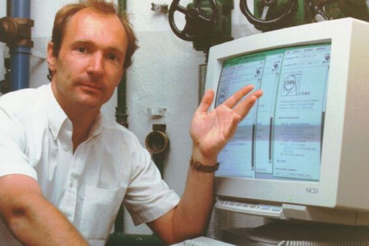

HTML (HyperText Markup Language) pertama kali diperkenalkan oleh Tim Berners-Lee pada tahun 1991 sebagai bagian dari proyek World Wide Web di CERN. Tujuan utamanya adalah untuk menyediakan format standar yang memungkinkan berbagai jenis dokumen diakses dan ditautkan melalui internet. Versi awal HTML hanya memiliki elemen dasar untuk struktur dokumen, seperti paragraf dan heading. Seiring waktu, HTML berkembang dengan penambahan fitur-fitur baru, termasuk atribut, formulir, dan elemen multimedia. HTML 4.01 dirilis pada tahun 1999, memperkenalkan lebih banyak elemen dan atribut untuk mendukung web yang lebih dinamis. HTML5, dirilis pada tahun 2014, membawa pembaruan signifikan dengan elemen baru, dukungan untuk multimedia tanpa plugin, dan API untuk meningkatkan interaktivitas dan fungsionalitas web. HTML terus berkembang untuk memenuhi kebutuhan desain dan teknologi web modern.
1991=HTML 1.0
HTML 1.0 adalah versi pertama dari bahasa markup ini yang dikembangkan oleh Tim Berners-Lee di CERN. Dirilis pada tahun 1991, HTML 1.0 memungkinkan pembuatan halaman web yang sangat sederhana dengan elemen-elemen dasar seperti tautan (a), teks (p, h1 hingga h6), dan gambar (img). Ini mempermudah penulisan dan penyebaran dokumen di internet, yang pada saat itu baru saja dimulai. HTML 1.0 tidak memiliki fitur-fitur seperti tabel, formulir, atau elemen multimedia, tetapi memberikan dasar bagi pengembangan web lebih lanjut.

1995=HTML2.0
HTML 2.0 dirilis oleh Internet Engineering Task Force (IETF) pada tahun 1995 sebagai versi pertama yang distandarisasi. Versi ini menambahkan berbagai elemen baru yang memungkinkan pembuatan halaman web lebih kompleks. Beberapa fitur penting yang diperkenalkan termasuk tabel (table), formulir (form,input, select), dan berbagai elemen untuk format teks. HTML 2.0 juga menetapkan aturan dan pedoman yang lebih ketat untuk penggunaan elemen-elemen tersebut, yang membantu memastikan konsistensi dalam bagaimana halaman web ditampilkan di berbagai peramban.

1997= HTML 3.2
HTML 3.2 dirilis oleh World Wide Web Consortium (W3C) dan membawa beberapa perubahan signifikan. Versi ini memperkenalkan elemen-elemen multimedia baru seperti (iframe), yang memungkinkan penyisipan konten dari dokumen lain ke dalam halaman web. Selain itu, HTML 3.2 menambahkan dukungan untuk scripting dengan JavaScript dan meningkatkan kemampuan presentasi dengan dukungan untuk style sheets dan elemen seperti (style>. Versi ini juga memperkenalkan elemen (object> dan (applet>, meskipun dukungan untuk elemen-elemen ini telah berkurang seiring dengan perkembangan HTML lebih lanjut.

HTML 4.0
Pada tahun yang sama, HTML 4.0 dirilis dengan perubahan besar, memperkenalkan konsep pemisahan antara konten dan presentasi melalui penggunaan Cascading Style Sheets (CSS). Ini memungkinkan desainer untuk mengontrol tampilan halaman web dengan lebih fleksibel tanpa memodifikasi struktur HTML. HTML 4.0 juga memperkenalkan elemen-elemen baru seperti
dan
, yang digunakan untuk struktur dan styling konten. Versi ini berfokus pada peningkatan aksesibilitas dan semantik, memberikan panduan yang lebih baik tentang bagaimana elemen HTML harus digunakan untuk menyajikan informasi dengan jelas dan terstruktur

2008:HTML 5.0 (prospek)
Pada tahun 2008, pengembangan HTML5 dimulai dengan tujuan untuk memperbarui dan memperluas HTML dengan fitur-fitur baru yang sesuai dengan perkembangan teknologi web. Draft awal HTML5 diperkenalkan oleh Web Hypertext Application Technology Working Group (WHATWG), dengan fokus pada integrasi elemen multimedia seperti dan audio, yang menghilangkan kebutuhan untuk plugin tambahan seperti Flash. HTML5 juga memperkenalkan elemen canvas untuk grafik dinamis, serta API JavaScript yang lebih canggih untuk penyimpanan lokal dan aplikasi web yang lebih interaktif.

2014:HTML 5.0 Final
HTML5 dirilis secara resmi oleh W3C pada tahun 2014 setelah proses pengembangan yang panjang. Versi final HTML5 mencakup banyak fitur baru yang meningkatkan kemampuan web untuk mendukung aplikasi modern. HTML5 mengintegrasikan elemen multimedia seperti (video)
(audio) secara native, memungkinkan pengembang untuk menambahkan konten media tanpa bergantung pada plugin eksternal. Versi ini juga memperkenalkan berbagai API JavaScript baru, seperti Web Storage API untuk penyimpanan lokal dan Web Workers untuk pemrosesan latar belakang, yang membantu meningkatkan kinerja dan fungsionalitas aplikasi web.

2020 Keatas
HTML terus diperbarui sebagai bagian dari HTML Living Standard, yang dikembangkan oleh WHATWG. Standar ini tidak memiliki versi tetap, tetapi memperbarui spesifikasi secara berkala dengan penambahan fitur baru, perbaikan bug, dan peningkatan kompatibilitas. Pembaruan ini termasuk perbaikan untuk aksesibilitas, keamanan, dan kinerja, serta dukungan untuk teknologi web terbaru. HTML Living Standard memastikan bahwa HTML tetap relevan dan efektif dalam mendukung pengembangan web modern, beradaptasi dengan cepat terhadap perubahan teknologi dan kebutuhan pengguna.

Cara Kerja HTML
Merupakan Langkah Kecil Berdampak Besar, 25 Agustus, 2024
HTML bekerja dengan menyediakan struktur dasar untuk halaman web melalui penggunaan tag-tag markup. Ketika Anda menulis kode HTML, Anda menggunakan tag seperti #h1>Header Utama #h1 untuk menentukan heading utama, #p Ini adalah paragraf #p untuk membuat paragraf teks, dan #a href="https://example.com">Kunjungi Website #a untuk menambahkan tautan ke halaman lain. Tag HTML ini memberikan arahan kepada browser tentang bagaimana konten harus diatur dan ditampilkan. Browser web kemudian membaca kode HTML, memproses tag-tag tersebut, dan menyusun elemen-elemen sesuai dengan struktur yang ditentukan dalam kode. Hasilnya adalah halaman web yang menampilkan teks, gambar, tautan, dan elemen lainnya dengan format yang sesuai, memungkinkan pengguna untuk melihat dan berinteraksi dengan konten secara visual. HTML juga berfungsi bersama dengan CSS untuk mengatur tampilan visual dan JavaScript untuk menambahkan fungsionalitas dinamis, membuat halaman web lebih interaktif dan menarik.
 Utama
Sejarah
Layanan
Informasi
Utama
Sejarah
Layanan
Informasi